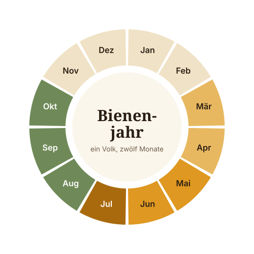

Schnuppertag
kostenlos
Zwei Stunden am offenen Stock, mit Schleier und Erklärung. Ohne Anmeldung an jedem Samstag von April bis September, 10–13 Uhr. Der beste Weg herauszufinden, ob man Bienen aus der Nähe mag.
Lage des StandsKurse & Angebote
Fünf Angebote, von zwei Stunden bis zu einem ganzen Jahr. Alle finden am Lehrbienenstand am Mühlenweg statt und werden von Mitgliedern geleitet.
Hauptkurs
Der Jahreskurs begleitet ein Bienenvolk über eine komplette Saison: vom Auswintern im März bis zum Einfüttern im August. Theorie gibt es freitags abends im Vereinsheim, Praxis samstags am offenen Stock – dort, wo sich herausstellt, ob die Theorie gestimmt hat.
Jede Teilnehmerin und jeder Teilnehmer bekommt eine Patin oder einen Paten aus dem Verein zugeteilt: eine Person, die man auch zwischen den Terminen anrufen darf, wenn das eigene Volk etwas Unerwartetes tut.
Am Ende des Kurses kannst du ein Volk durchsehen, Schwarmstimmung erkennen, Honig ernten, auf Varroa behandeln und einwintern. Wer möchte, übernimmt im September ein Ablegervolk aus dem Verein.
Nächster Durchgang
190 € / 95 € unter 27
Imkern ist saisonal, und zwar deutlich. Zwischen Mai und Juli entscheidet sich fast alles – im Winter ist monatelang nichts zu tun.

kostenlos
Zwei Stunden am offenen Stock, mit Schleier und Erklärung. Ohne Anmeldung an jedem Samstag von April bis September, 10–13 Uhr. Der beste Weg herauszufinden, ob man Bienen aus der Nähe mag.
Lage des Stands90 € / Jahr
Du finanzierst ein Vereinsvolk, wir pflegen es. Dafür bekommst du zwei Kilogramm Honig aus genau diesem Stock, eine Urkunde mit Standort und zweimal im Jahr eine Einladung zum Mitschauen.
Patenschaft anfragenSpende
90 Minuten am Schaukasten, abgestimmt auf die Klassenstufe: Wabe anfassen, Königin suchen, Honig probieren. Zwei Termine pro Monat, in der Regel dienstags und donnerstags vormittags.
Termin anfragen7,50 € / 500 g
Frühjahrsblüte, Sommerblüte und – in guten Jahren – Lindenhonig aus der Allee am Sportplatz. Verkauf samstags am Stand, solange der Vorrat reicht. Gläser bitte mitbringen oder zurückgeben.
Verfügbarkeit fragenfür Mitglieder
Vier-Waben-Schleuder mit Motor, Abfülleimer, Dampfwachsschmelzer und Refraktometer. Belegung über die Liste im Vereinsheim, Reinigung übernimmt jeder selbst.
Mitglied werdenkostenlos
Hängt bei dir eine Bienentraube im Baum, holen wir sie ab – von Mai bis Juli meist innerhalb weniger Stunden. Wichtig: Honigbienen schwärmen friedlich. Wespen und Hornissen sind nicht unser Zuständigkeitsbereich.
Schwarm meldenIm Jahresmittel etwa eine Stunde pro Woche und Volk – aber extrem ungleich verteilt. Von Mai bis Juli brauchst du alle sieben bis neun Tage rund eine Stunde, von November bis Februar fast nichts. Wer im Mai drei Wochen verreist, sollte vorher jemanden fragen, der nachschaut.
Realistisch 450 bis 550 Euro im ersten Jahr: 190 Euro Kurs, rund 250 Euro für Beute, Rähmchen und Werkzeug, 48 Euro Mitgliedsbeitrag. Das erste Volk bekommen Kursteilnehmer als Ableger aus dem Verein, meist gegen einen kleinen Beitrag. Schleuder und Spezialgeräte musst du nicht kaufen.
Meist ja. Zwei Völker brauchen etwa vier Quadratmeter, wichtiger als die Fläche ist die Flugrichtung: Das Flugloch sollte nicht auf den Nachbarsitzplatz oder einen Gehweg zeigen. Eine Hecke oder ein Zaun zwei Meter vor dem Stock lenkt die Bienen nach oben. In Mietgärten vorher mit dem Verpächter sprechen.
Ja. Bienenhaltung ist beim Veterinäramt des Landkreises anzeigepflichtig und braucht eine Betriebsnummer – kostenlos und in zehn Minuten erledigt. Im Kurs machen wir das gemeinsam. Die Haftpflicht läuft über die Mitgliedschaft im Verein.
Eine ärztlich festgestellte Insektengiftallergie ist ein echtes Hindernis – Stiche gehören zum Imkern dazu, auch bei guter Ausrüstung. Normale Schwellungen von einigen Zentimetern sind dagegen üblich und werden mit den Jahren schwächer. Lass es im Zweifel vorher testen; am Schaukasten kannst du trotzdem alles sehen.
Schnuppertag, Schulprojekte und Honigverkauf sind für alle offen. Beim Jahreskurs setzen wir die Mitgliedschaft voraus, weil Versicherung und Gerätenutzung daran hängen – du kannst sie zum Kursbeginn abschließen und nach einem Jahr wieder kündigen.
Der Jahreskurs 2027 startet am 12. Februar. Schreib uns, welches Angebot dich interessiert – wir antworten innerhalb von drei Tagen.